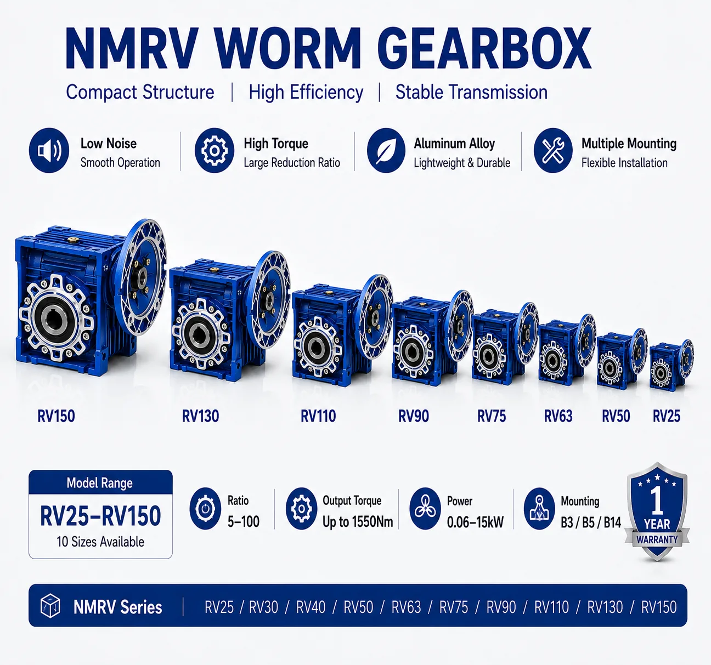

Need Help Selecting an NMRV Gearbox?
Send SMK your motor and machine data for a recommended frame size, ratio and mounting configuration.
- Motor power & rpm
- Required output speed
- Running & peak torque
- Duty & starts/hour
- Mounting & quantity
An NMRV worm gearbox is a compact right-angle speed reducer. A hardened steel worm drives a bronze worm wheel to reduce motor speed and increase available output torque. The aluminum-housing design is widely used on conveyors, packaging machines, feeders, mixers, agricultural equipment and general automation where space and flexible mounting are important.
1. What sizes are available in the NMRV range?
The pictured family contains ten frame sizes: RV25, RV30, RV40, RV50, RV63, RV75, RV90, RV110, RV130 and RV150. A larger frame generally provides greater mechanical and thermal capacity, but it also increases dimensions, weight and cost.
| Frame group | Models | Typical selection role |
|---|---|---|
| Compact | RV25, RV30, RV40 | Light automation, small conveyors, feeders and compact machines |
| Medium | RV50, RV63, RV75, RV90 | Packaging, material handling, mixers and general industrial drives |
| Large | RV110, RV130, RV150 | Higher-torque machinery where larger shafts, bores and capacity are required |
This grouping is a practical orientation, not a torque rating. The correct model must be checked against the supplier's rating table for the exact ratio, input speed, duty and mounting position.
2. How do ratio and output speed relate?
Common NMRV ratios range from 5:1 to 100:1. The required theoretical ratio is:
For a 1450 rpm motor and a required output speed of about 29 rpm:
Select the nearest available catalog ratio and recalculate the actual output speed. Use rated motor speed rather than synchronous speed. A higher ratio normally produces lower output speed, but efficiency and permissible torque vary by ratio.
3. How do torque and motor power affect selection?
Motor power alone does not determine the gearbox size. First establish the running torque and peak torque required by the machine. A preliminary output-torque estimate is:
For example, a 0.75 kW motor at 29 rpm with an assumed overall gearbox efficiency of 70% gives an estimated output torque of about 173 Nm. This is only a calculation check. The selected reducer must still remain within its published continuous torque, peak torque, thermal and shaft-load ratings.
The image shows a family range up to 1550 Nm and 0.06-15 kW. These are overall range values, not ratings available from every size or ratio. Confirm the exact motor-reducer combination before ordering.
4. How do I choose the correct NMRV frame size?
- Determine motor rated power and full-load speed.
- Calculate the required output rpm and gearbox ratio.
- Calculate running and startup torque at the driven shaft.
- Apply the service factor required by load type, daily hours, starts per hour and shock.
- Choose a frame whose rated output torque and thermal capacity exceed the calculated requirement.
- Verify overhung and axial shaft loads, bore or shaft dimensions and key size.
- Confirm the selected ratio, input flange, mounting position and lubrication arrangement.
Do not automatically choose the smallest gearbox that reaches the required calculated torque. Frequent starts, reversing, high ambient temperature, shock loading or long continuous operation may require a larger frame.
5. Mounting positions and motor interfaces
NMRV reducers support flexible installation, including foot, flange and shaft-mounted arrangements. The pictured range highlights B3, B5 and B14 mounting options. Actual availability depends on model, motor adapter, output flange and accessories.
Before ordering, confirm:
- Mounting position and output orientation
- Hollow bore or solid output shaft diameter
- Input flange and IEC motor frame
- Torque arm, output flange or foot requirement
- Terminal-box position and available installation space
- Lubrication suitability for the selected position
6. Where are NMRV worm gearboxes used?
NMRV worm reducers are commonly selected for compact right-angle drives in:
- Conveyor and material-handling systems
- Packaging, filling, sealing and labeling machines
- Food-processing equipment where the chosen finish and protection suit the environment
- Feeders, augers, gates and positioning mechanisms
- Mixers and light process machinery
- Agricultural and general automation equipment
Worm reducers are valued for compact geometry, broad ratios, low-noise operation and mounting flexibility. However, efficiency is not a fixed property: it changes with ratio, lead angle, speed, lubrication, temperature and load. For long continuous duty where energy use is a priority, compare the application with a hypoid gearbox as well.
7. Important engineering limitations
- Self-locking: a high ratio does not guarantee safe load holding. Use a brake or dedicated holding device for safety-critical applications.
- Thermal capacity: continuous operation can be limited by heat even when mechanical torque appears adequate.
- Efficiency: do not use one generic efficiency value for every ratio and operating point.
- Warranty: the pictured product family states a one-year warranty; the applicable commercial terms should be confirmed in the quotation.
8. NMRV gearbox quotation checklist
Provide the following information for a faster and more accurate selection:
- Machine type and application
- Motor power, rated rpm, voltage and frequency
- Required output speed or ratio
- Required running and peak torque
- Operating hours per day, starts per hour and duty cycle
- Mounting position and shaft orientation
- Output bore or shaft diameter, flange and key requirements
- Ambient temperature, dust, moisture and washdown exposure
- Required quantity and delivery destination
Review the SMK NMRV worm gearbox product page, read the worm gear motor selection guide, or send your application data to SMK.
Frequently asked questions
What NMRV worm gearbox sizes are available?
The range shown covers RV25, RV30, RV40, RV50, RV63, RV75, RV90, RV110, RV130 and RV150. Confirm availability for the required ratio and interface.
What ratios are available?
Common single-stage ratios range from 5:1 to 100:1. Rated torque and efficiency vary by size and ratio.
How do I choose the frame size?
Calculate output speed and torque, apply service factor, and then verify mechanical torque, thermal capacity, shaft loads, mounting, bore and motor interface.
Is a larger gearbox always better?
No. Choose the smallest frame that safely meets all mechanical, thermal and interface requirements without unnecessary size and cost.
Is an NMRV gearbox always self-locking?
No. Back-driving depends on geometry, friction, lubrication and operating conditions. Use a brake for safety-critical holding.